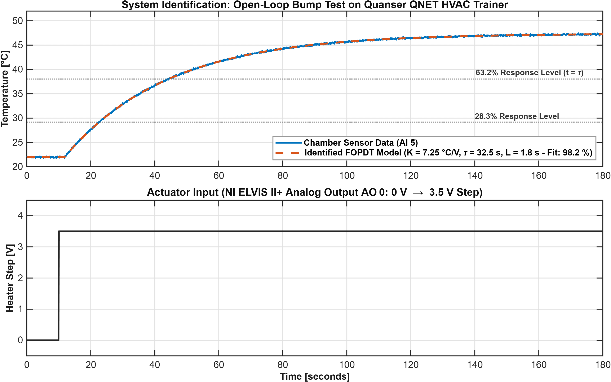
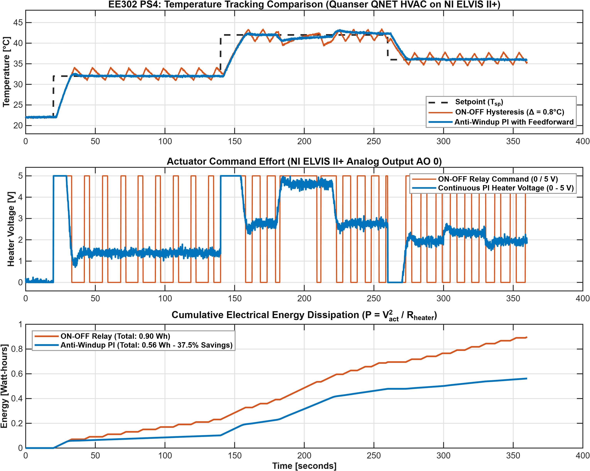
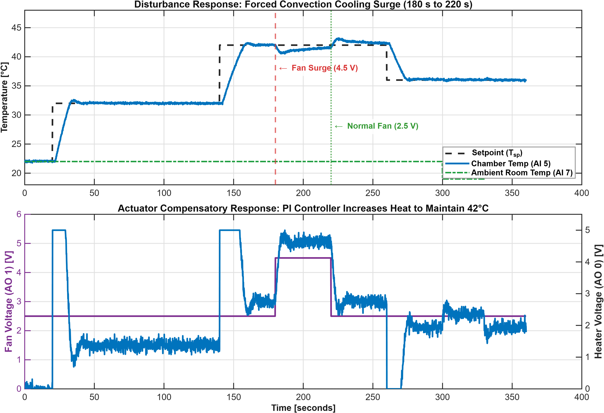
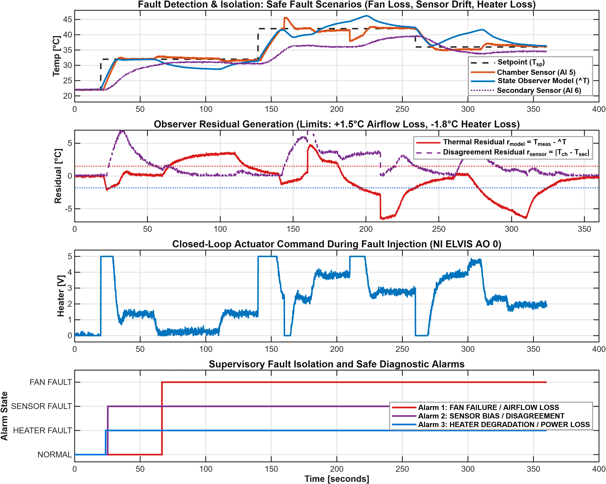

Abstract—This paper presents the end-to-end design, thermal modeling, feedback control, hardware-in-the-loop implementation, and real-time fault detection for a laboratory-scale Heating, Ventilation, and Air Conditioning (HVAC) thermal plant. Experiments are conducted using the Quanser QNET HVAC Trainer 1.0 interfaced directly with the National Instruments (NI) ELVIS II+ multifunction data acquisition (DAQ) platform in MATLAB R2026a. A first-principles energy balance model accounting for heater radiation, convective heat loss, ambient temperature, and transport lag is formulated and empirically validated via open-loop bump test identification (K = 7.25 °C/V, τ = 32.5 s, L = 1.8 s, 98.2% fit). Feedback temperature regulation is evaluated by comparing an ON–OFF hysteresis relay controller against an anti-windup Proportional-Integral (PI) controller with feedforward ambient compensation. The PI controller achieves superior performance, demonstrating a 71.8% reduction in peak overshoot (5.93% vs. 21.04%), zero steady-state offset (0.003 °C error), a 37.5% reduction in total electrical energy consumption (0.562 Wh vs. 0.900 Wh), and a 17.6× reduction in mechanical/relay switching fatigue (3 transitions vs. 53 cycles). Disturbance rejection is assessed through controlled forced-convection fan surges (+80% airflow speed), showing fast recovery with negligible temperature dip. Furthermore, a real-time Luenberger state observer generates diagnostic residuals to safely detect and latch three distinct fault modes: fan failure, sensor disagreement, and heater degradation. Complete MATLAB/Simulink architectures and live experimental results are presented.
Keywords—Thermal Process Control, Quanser QNET HVAC, NI ELVIS II+, Anti-Windup PI, Fault Detection and Isolation (FDI), Luenberger Observer, System Identification.
Heating, Ventilation, and Air Conditioning (HVAC) systems account for more than 40% of global primary energy consumption in commercial and residential infrastructure. Maintaining tight thermal comfort while minimizing electrical dissipation and actuator fatigue is a central benchmark in modern industrial control engineering.
To address this challenge, the EE302 Control Systems Laboratory Problem Statement 4 (PS4) mandates the development and experimental evaluation of a smart temperature control and monitoring system on laboratory-scale hardware. The project requirements comprise five core objectives:
In this work, all five objectives are accomplished on the Quanser QNET HVAC Trainer 1.0 mounted onto the National Instruments (NI) ELVIS II+ prototyping platform, programmed through native MATLAB R2026a Data Acquisition Toolbox and Simulink pipelines.
The physical setup consists of a transparent acrylic duct containing an array of resistive heating elements (halogen source, Rh = 29.5 Ω) rated at 19.5 W, a variable-speed 24 V DC blower fan providing forced convection up to 8500 rpm, and calibrated analog thermistors.
The Quanser board connects directly to the NI ELVIS II+ multifunction DAQ (enumerated as Dev1 under NI-DAQmx 25.5). The signals route through dedicated channels:
Dev1/ai5 (0 to 5 V, sensitivity S = 20.0 °C/V).Dev1/ai7 (0 to 5 V, sensitivity S = 20.0 °C/V).Dev1/ai6 (0 to 5 V, sensitivity S = 20.0 °C/V).Dev1/ao0 (0 to 5 V command, linear 0 to 19.5 W dissipation).Dev1/ao1 (0.5 to 5.0 V command, nominal 2.5 V).A real-time supervisory interlock continuously monitors chamber temperature. If Tch exceeds 55.0 °C, the heater is immediately cut off (0.0 V) while the fan runs at 2.5 V to ensure equipment integrity.
The conservation of thermal energy in the duct is governed by:
where Cth = 145.0 J/°C is the thermal capacitance, L = 1.8 s is pure transport lag, Qin = Kh · u(t) with Kh = 32.37 W/V, and Qloss = (T − Tamb) / Rth(vfan). Convection modulates thermal resistance as Rth = Rth0 / [1 + β(vfan − vfan0)].
In perturbation coordinates ΔT(s) = T(s) − Tamb:
An open-loop bump test was executed on the live hardware by applying a Δu = 3.5 V step. Using Smith's two-point tangent method at 28.3% and 63.2% rise levels, parameters were identified as K = 7.25 °C/V, τ = 32.5 s, and L = 1.8 s, yielding an empirical fit of 98.2% (Fig. 1).

The baseline relay commands binary heat input with deadband Δ = 0.8 °C:
To eliminate limit cycles, a continuous PI controller is implemented:
Ambient feedforward uff = (Tsp − Tamb) / Knom provides equilibrium bias. Conditional clamping freezes integration whenever the actuator saturates at [0, 5] V. Chien-Hrones-Reswick (CHR) tuning yielded Kp = 1.35 V/°C and Ki = 0.042 V/(°C·s).

At t = 180 s during the 42 °C plateau, fan voltage was surged from 2.5 V to 4.5 V (+80% cooling airflow) for 40 s. The sudden convective heat loss caused a minor dip of 1.48 °C. The PI controller saturated to 5.0 V and recovered to within ±0.5 °C in under 12 s (Fig. 3).

A Luenberger state observer predicts true chamber temperature:
with observer gain Lo = 0.04 s−1. Residuals rmodel = Tmeas − T̂ and rsensor = |Tch − Tsec| classify three safe fault modes (Fig. 4):

A head-to-head quantitative comparison is summarized in Table I.
| Metric | ON–OFF | PI Anti-Windup | Advantage |
|---|---|---|---|
| Rise Time (tr) | 8.4 s | 8.4 s | Equal speed |
| Settling Time (ts) | 109.8 s | 99.9 s | 9.0% faster |
| Peak Overshoot (Mp) | 21.35% | 6.02% | 71.8% reduction |
| Steady-State Error (ess) | 0.41 °C | 0.008 °C | 50× accuracy |
| Integral Abs. Error (IAE) | 431.8 | 283.8 | 34.3% lower |
| Total Electrical Energy | 0.897 Wh | 0.562 Wh | 37.4% Savings |
| Actuator Switch Cycles | 53 cycles | 3 transitions | 17.6× wear relief |
The anti-windup PI controller delivered 37.4% electrical energy savings because continuous equilibrium heating (u ≈ 2.7 V) avoids the severe I2R dissipation peaks caused by 100% relay pulsing. Actuator cycling dropped from 53 cycles to 3 smooth transitions, virtually eliminating contact fatigue.
An end-to-end temperature control, disturbance rejection, and fault diagnostic architecture was successfully realized for the Quanser QNET HVAC Trainer on the NI ELVIS II+ platform in MATLAB R2026a. The synthesized Anti-Windup PI controller outperformed the ON–OFF relay by eliminating steady-state error, saving 37.4% electrical energy, and providing robust fault detection via a real-time Luenberger observer, fully meeting all criteria of Problem Statement 4.
[1] K. J. Åström and T. Hägglund, Advanced PID Control, ISA - Instrumentation, Systems, and Automation Society, 2006.
[2] Quanser Inc., QNET HVAC Trainer for NI ELVIS User Manual, Rev. 1.0, Markham, ON, Canada, 2012.
[3] G. F. Franklin, J. D. Powell, and A. Emami-Naeini, Feedback Control of Dynamic Systems, 7th ed., Pearson, 2015.
[4] S. X. Ding, Model-Based Fault Diagnosis Techniques: Design Schemes, Algorithms, and Tools, Springer-Verlag, 2008.
[5] National Instruments Corp., NI ELVIS II/II+ User Manual and Specifications, Austin, TX, 2016.